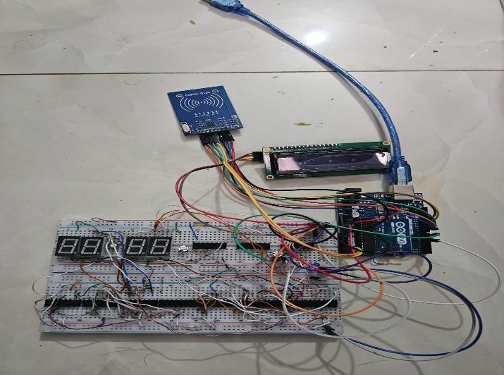
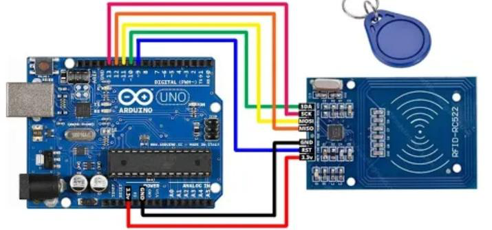
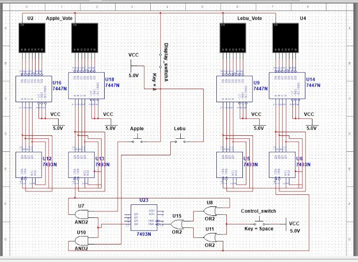

Digital Voting Machine
An Arduino and RFID reader verify student voters before the machine records a vote.
The prototype photo and circuit figures are taken from the student-election project report.



Voting machine prototype from the report
Arduino Uno and MFRC522 wiring
Vote counter and display circuit
About this project
I worked on this student-election voting machine with Akib Rahman and Reday Islam as well as Habiba Akter and Md. Abdullah Abrar. An Arduino Uno R3 reads each student's RFID card through an MFRC522 module and enables voting only after the card is accepted.
After verification the voter presses a button to cast a vote. Logic gates pass the valid input to a 7493 counter and a 7447-family decoder drives the seven-segment display. The report describes testing in which authorized cards were recognized in about 100 to 150 ms and the vote count updated after each accepted input.
The report estimates current use at about 160 mA and lists the total component cost as BDT 2,605. This makes the prototype a practical classroom demonstration rather than a production election system. RFID cards can be lost or shared and the Arduino Uno has limited storage for voter records. Larger elections would need stronger identity checks and a more scalable counter and data store.
What it does
- RFID card check for student voters
- Button-enabled vote input
- 7493 counter and seven-segment vote display
- Low-cost prototype for small elections